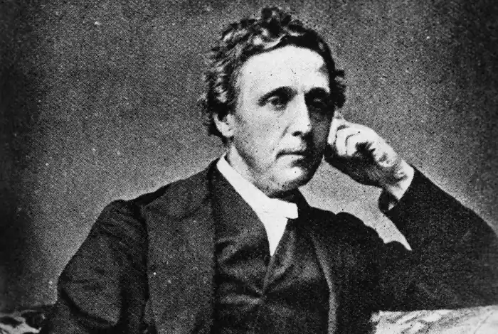
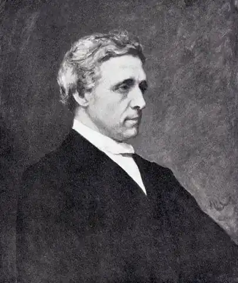

КЕРРОЛЛ, Льюїс (Carroll, Lewis; автонім: Доджсон, Чарлз Латвідж — 27.01.1832, с Дарсбері, графство Чешир — 14.01.1898, Гілфорд) — англійський письменник. Чарлз Латвідж Доджсон (таке справжнє ім'я Керролла) народився у невеличкому селі Дарсбері в графстві Чешир. Він був найстаршим сином скромного парафіяльного священика Чарлза Доджсона та Френсіс Джейн Латвідж. При хрещенні, як нерідко траплялося у ті часи, йому дали два імені: перше — на честь батька, друге, Латвідж, — на честь матері. Він виховувався у великій родині: семеро сестер і троє братів. Діти отримали домашнє виховання; навчав їх закону Божого, мов та основ природничих наук, "біографії" та "хронології" батько. Чарлз Доджсон був людиною непересічною: глибока релігійність та університетська освіченість поєднувалися в ньому зі схильністю до ексцентричного. Батько не лише не притлумлював у дітях прагнення до найрізноманітніших ігор і веселих витівок, а й усіляко їм сприяв. Найбільшим вигадником тут незмінно був Чарлз. З допомогою сільського столяра Чарлз змайстрував театр маріонеток; він писав для нього п'єси, які сам і розігрував. Нерідко, перевдягнувшись факіром, він показував схвильованій аудиторії дивовижні фокуси. Для своїх молодших братів і сестер він видавав рукописні журнали, у яких все — "романи", цікаві замітки з "природничої історії", вірші та "хроніки" — вигадував сам. Він не лише переписував їх дрібним виразним почерком, а й ілюстрував власними малюнками, оформлював і оправляв.
Уже в ранніх опусах виразно відчувається схильність юного автора до пародії та бурлеску. Гумористичного переосмислення та переінакшення зазнають рядки класичних віршів — В. Шекспіра, Дж. Мільтона, Т. Грея, Т.Б. Маколея, С.Т. Колріджа, В. Скотта, Дж. Кітса, Ч. Діккенса, А. Теннісона й ін. У цих "перших напівсерйозних спробах наближення до літератури та мистецтва" юний автор виявляє широку начитаність і безумовну обдарованість.
Коли Чарлзові виповнилося дванадцять років, його віддали у школу — спершу річмондську, а потім у знамениту Реґбі. Це був привілейований навчальний заклад закритого типу, який викликав у Керролла різку неприязнь. "Не можу сказати, ніби шкільні роки залишили в мені приємні спомини, — писав він через багато років. — Ні за які блага не погодився б я знову пережити ці три роки". Навчання Керроллу давалося легко. Особливий інтерес він виявив до математики та класичних мов. Решта життя Керролла пов'язана з Оксфордським університетом. Він закінчив коледж Христової церкви (Крайст Черч Коледж), один із найстаріших в Оксфорді, з відзнакою за двома факультетами: математики та класичних мов — випадок рідкісний навіть на ті часи. 1855 р. йому було запропоновано професорську посаду в цьому коледжі, традиційною умовою якого тоді було прийняття духовного сану та целібату. Останнє обмеження не хвилювало молодого математика, позаяк він ніколи не відчував потягу до матримонії; однак якийсь час відкладав прийняття сану, бо побоювався, що через це йому доведеться відмовитись від страшенно улюблених ним занять — фотографії та відвідування театру, які могли вважатися надто легковажними для духовної особи. 1861 р. він прийняв сан диякона, що було тільки першим, проміжним, кроком. Однак зміни університетського статусу позбавили його від необхідності наступних кроків у цьому напряму. Доктор Доджсон присвятив себе математиці. Його перу належать Ґрунтовні праці з математики, але "особливої віртуозності він досяг у складанні та розв'язку складних логічних задач, здатних завести в глухий кут не лише недосвідчену людину, а й сучасну ЕОМ". Доктор Доджсон провадив самотній і суворо впорядкований спосіб життя. Лекції, математичні студії, які переривалися скромним ленчем, знову студії, далекі прогулянки (вже в літньому віці по 17—18 миль на день), увечері обід за "високим" викладацьким столом у коледжі та знову студії. Все життя він страждав від затинання і нерішучості, знайомств уникав, лекції читав рівним механічним голосом. В університеті його вважали педантом, ексцентриком і диваком. Доктор Доджсон писав багато листів. На відміну від своїх сучасників, які не бажали наслідувати "добру" епістолярну традицію XVII— XVIII ст., він не лише писав листи, а й завів спеціальний журнал, у якому зазначав усі відіслані й отримані ним листи, розробивши складну систему прямих і зворотних посилань. За тридцять сім років Керролл відіслав 98721 лист. Керролл страждав від безсоння. Ночами, лежачи без сну в ліжку, він придумував, аби відволіктися від сумних думок, "Опівнічні задачі" — алгебраїчні та геометричні головоломки — і розв'язував їх у темряві. Пізніше Керролл опублікував ці головоломки під назвою "Опівнічні задачі, придумані безсонними ночами", змінивши в другому виданні "безсонні ночі" на "безсонні години". Керролл пристрасно любив театр. Читаючи його щоденник, до якого він занотовував найнезначніші події дня, бачиш, яке місце посідала в його житті не лише висока трагедія, Шекспір, єлизаветинці, а й комічні бурлески, музичні комедії та пантоміма. Згодом, уже будучи відомим автором, він особисто спостерігав за постановкою своїх казок на сцені, виявляючи витончене розуміння театру і законів сцени. Замолоду Доджсон мріяв стати художником. Він багато малював — олівцем або вуглем, ілюструючи власні юнацькі спроби. Навіть відіслав серію своїх малюнків у "Гумористичний додаток до "Тайме". Редакція їх відхилила. Тоді Доджсон взявся за фотографію і досяг тут дивовижних висот. На думку фахівців, Керролл був одним із найкращих фотографів XIX ст. Проте понад усе Доджсон любив дітей. Цураючись дорослих, почуваючи себе з ними важко та скуто, болісно затинаючись, іноді не в стані вимовити жодного слова, він ставав надзвичайно веселим і цікавим співбесідником, варто було йому лише з'явитися в товаристві дітей. "Не розумію, як можна не любити дітей, — писав він в одному зі своїх листів, — вони становлять три чверті мого життя". Він здійснював з ними тривалі прогулянки, водив їх у театр, запрошував у гості, розважав спеціально вигаданими для них оповідками, які супроводжувалися швидкими виразними замальовками за ходом розповіді. Спілкування з дітьми, гра незмінно слугували поштовхом до творчості для Керролла. Його найкращі твори — обидві казки про Алісу, вірші — виникли як імпровізація, хоча згодом значно доопрацьовувалися. Доджсон лише раз виїздив за межі Англії. Влітку 1867 р. разом зі своїм другом ректором Лідделлом він вирушив у Росію — досить незвична на той час подорож. Відвідавши дорогою Кале, Брюссель, Потсдам, Данціґ, Кенігсберг, він провів у Росії місяць — з 26 липня до 26 серпня і повернувся в Англію через Вільно, Варшаву, Емс, Париж. У Росії Доджсон побував у Петербурзі та його околицях, Москві, Сергієвому Посаді та з'їздив на ярмарок до Нижнього Новгорода. Свої враження він стисло виклав у "Російському щоденнику". Більше Керролл не виїздив за межі Англії. Інколи він бував у Лондоні, де продовжував також уважно стежити за театральними постановками; канікули проводив зазвичай в Ґілфорді, де жили його сестри. Там він і помер 14 січня 1898 р. На ґілфордському кладовищі над його могилою стоїть звичайний білий хрест. На батьківщині Керролла у сільській церкві Дарсбері, є вітраж, де поруч із замисленим Додо стоїть Аліса, а навколо стовпилися Білий Кролик, Березневий Заєць, Чеширський Кіт та ін.Перше видання книги "Аліса в Країні чудес" ("Alice's Adventures in Wonderland") побачило світ 27 червня 1865 р., а в грудні 1871 р. читачі зустрілися і з другою частиною книги — "Крізь дзеркало і що там побачила Аліса, або Аліса в Задзеркаллі" ("Through the Looking-glass and What Alice Found There"). Перша книга про Алісу вдалася Керроллу не відразу. Існує щонайменше три варіанти. Про перші два відомо небагато. 1 липня 1862 р. під час прогулянки човном по невеличкій річці, що впадає в Темзу неподалік від Оксфорда, Керролл почав розповідати дівчаткам Лідделл, донькам свого колеги, ректора коледжу Крайст Черч, казку про пригоди Аліси, названої так за ім'ям його улюблениці, десятирічної Аліси Лідделл. Казка дівчаткам сподобалась, і під час наступних прогулянок і зустрічей вони неодноразово вимагали продовження. З щоденника К відомо, що він розповідав свою "нескінченну казку", а іноді, коли під рукою опинявся олівець, малював по ходу розповіді своїх героїв у дивних ситуаціях, що випали на їхню долю. Згодом Аліса попросила Керролла записати для неї казку: "Нехай у ній буде якнайбільше різних нісенітниць". Уже в початковому імпровізованому варіанті "нісенітниці" (або нонсенси) були присутні разом з більш традиційними "пригодами". Лише 1863 p. Керролл завершив перший рукописний варіант казки, яку назвав "Пригоди Аліси під землею". Проте цей варіант не був відданий Алісі Лідделл; 1864 p. Керролл взявся за другий, детальніший. Своїм дрібним каліграфічним письмом він переписав його від руки і супроводив 37-ма малюнками в тексті, а перший варіант знищив. 26 січня 1864 р. він подарував Алісі цей рукописний зошит, наклеївши на останній сторінці фотокартку семирічної Аліси (вік героїні казки). Врешті, 1865 р. з'явився остаточний варіант, відомий всім як "дефінітивний текст". Здавалось, цим все і мало б обмежитись, але так не сталося. 1890 р., в розпал першої хвилі популярності казки, Керролл видав варіант "для дітей". Мабуть, у суперечках, які вже понад століття тривають навколо книги Керролла, всі дослідники одностайні лише в одному: книга має подвійну "адресу": вона розрахована на два рівні сприйняття — дитячий і дорослий. Казки Керролл належать до так званих літературних казок, які набули в Англії неабиякої популярності в середині XIX ст. Представники цього жанру Дж. Рескін, В. Теккерей, Ч. Кінґслі, Дж. Макдональд, Ч. Діккенс по-своєму розробляли фольклорну традицію, переосмислюючи жанр у рамках власних ідей та концепцій. К. більшою мірою тяжів до напряму, представленого Теккереєм і Діккенсом. "Аліса в Країна чудес" та "Задзеркалля" стоять ближче до іронічної лінії розвитку літературної казки Англії, майстрами якої були Теккерей і Діккенс, але багато в чому й відрізняються від неї. Іронія Керролла має принципово інший характер: вона ближча до тієї значно загальнішої категорії, яка стосовно німецьких романтиків отримала назву "романтичної іронії". Казки Керролла — це й результат глибокого опанування фольклорної традиції, яка бере початок передусім з казки чарівної, але нею аж ніяк не вичерпується.